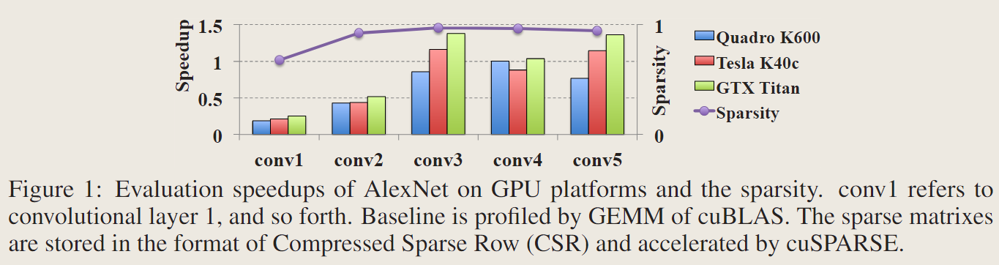

学习结构化稀疏：精度与速度的双赢？

论文：Learning Structured Sparsity in Deep Neural Networks
作者：Wei Wen, Chunpeng Wu, Yandan Wang, Yiran Chen, Hai Li
一作单位：University of Pittsburgh
录用情况：Neurips'2016
本文通过添加在滤波器数量、通道、形状维度以及深度上的group lasso正则化，让模型学习到结构化稀疏，后再微调；实验表明，这种结构化稀疏不需要很大的稀疏率就可以在多种设备上产生可观的加速效果，甚至还能减轻过拟合从而提升性能。
方法
结构化稀疏的优势
非结构化稀疏、非结构化剪枝的方法，能够获得凌乱稀疏的权重矩阵，这样对数据局部性的利用率不高，导致需要达到很高的稀疏率（>95%）才能获得实质性的加速；
有意思的是，本文的图1位置没有用来解释本文的方法，或者展示本文方法的效果，而是展示了在用L1 norm为AlexNet学习非结构稀疏后，其各层非常有限的加速比；

低秩近似的方法，是结构化的，但是在获得分解结构需要多轮的分解和微调，才能找到精度与速度的权衡；
结构化稀疏的朴素理解，就是把不重要的卷积核、不重要的通道、不重要的卷积核位置全部置0，在推理前移除这些全0的部分，之后仍可以使用off-the-shelf的算子去实现，很好地利用数据局部性；
几种结构化稀疏的模式
本文记录一个卷积层4D张量的符号是 \(W^{(l)}\in \mathbb{R}^{N_l\times C_l \times M_l \times K_l}\)，其中 \(N_l, C_l , M_l , K_l\) 分别代表第 \(l\) 层卷积参数的卷积核数量，通道数，高，宽；
通常的，带有稀疏化正则项的优化目标是：
\[ E(W) = E_D(W) + \lambda R(W) + \lambda_g \sum_{l=1}^{L}R_g(W^{(l)}) \]
\(E_D\) 表示分类损失，\(R\) 是对所有权重的非结构化正则化函数，\(R_g\) 是对某组的结构化正则函数，组与组之间可以有重叠；使用 group lasso 因为其能够将一组的参数全部变为0；
去除不重要的滤波器和通道
将第 \(l\) 层的第 \(n_l\) 个卷积核视为一组，将第 \(l\) 层的第 \(c_l\) 个通道视为一组；因为减少第 \(l\) 层的卷积核数量，会响应减少第 \(l+1\) 层的通道数，因此这里将这两种结构化稀疏同时使用；
\[ \lambda_n \sum_{l=1}^L\left(\sum_{n_l=1}^{N_l}\lVert W_{n_l,:,:,:}^{(l)} \rVert _g\right) + \lambda_c \sum_{l=1}^L\left(\sum_{c_l=1}^{C_l}\lVert W_{:,c_l,:,:}^{(l)} \rVert _g\right) \]
进一步地，考虑到3D卷积不过是2D卷积结果之和，我们可以把每一个2D的卷积核作为一组，正则化项写为： \[ \lambda_n \sum_{l=1}^L\left(\sum_{n_l=1}^{N_l}\sum_{c_l=1}^{C_l}\lVert W_{n_l,c_l,:,:}^{(l)} \rVert _g\right) \]
这样每一组更小，更容易被全部zero-out；
去除不重要的位置
将第 \(l\) 层各卷积核的 \(c_l,m_l,k_l\) 位置的权重作为一组；删除不重要的位置会得到非长方体形状的卷积，似乎没有off-the-shelf的算子支持；
\[ \lambda_s \sum_{l=1}^L\left( \sum_{c_l=1}^{C_l}\sum_{m_l=1}^{M_l}\sum_{k_l=1}^{K_l}\lVert W^{(l)}_{:, c_l, m_l, k_l} \rVert _g \right) \]
但是思考卷积运算转化为矩阵乘法的实现，其中卷积核被展开为 \(N_l\times C_lM_lK_l\) 的矩阵，删除不重要的卷积核相当于删除行，删除不重要的位置相当于删除列，因而后文也会将filter-wise稀疏度叫做row-wise稀疏度，将shape-wise稀疏度叫做column-wise稀疏度；
这种转化为矩阵乘法，消除行列的思路更早的出现在论文Fast ConvNets Using Group-wise Brain Damage中，这篇文章详细地描述了 row-wise 和 column-wise 的稀疏度；在稀疏化+微调的方法上，这篇文章通过为正则化项引入阈值，避免将距离过远的组变成0，实现了一种Gradual group-wise sparsification，调参更简单；
去除不重要的层
以一层的参数为一组： \[ \lambda_d \sum_{l=1}^L \lVert W^{(l)} \rVert _g \]
与之前几种模式不同的是，训练过程中将一层的参数全部置位0，会使得前向传播与反向传播在此中断，因此使用该正则项的层必须有shortcut连接；